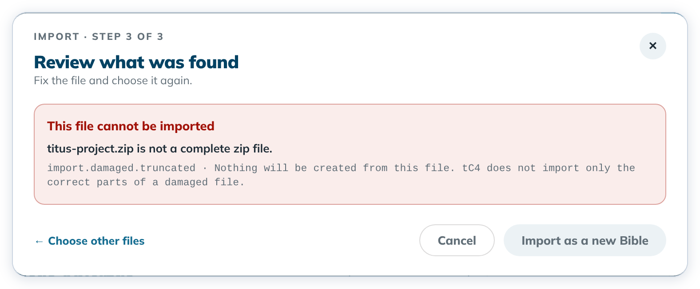

Help › Troubleshooting and known limits
Messages that protect your project
When tC4 finds something unexpected, it stops rather than risk your work, and tells you what to do.
Each message says whether your work is saved, or that nothing was created.
Steps
- Read the message and follow its advice.


- For a refused import file, click ← Choose other files to pick a good file, or Cancel.
- If it says "Ask for help", contact your support person and leave the project folder as it is.
Messages when you import
| Code | Example | What to do |
|---|---|---|
import.damaged.truncated | "… is not a complete zip file." | The zip was cut off. Export or copy it again. |
import.damaged.no-manifest | "… has no manifest.json, so it is not a translationCore 3 project." | Choose the zip translationCore 3 exported. |
import.damaged.corrupt-entry | "… is damaged … so it cannot be read." | Export it from translationCore 3 again. |
import.name-exists | "A project with this name is already on this computer." | Type another Bible name. |
import.write-failed | "The partly written Bible was removed…" | Try again. If it happens again, ask for help. |
USFM files are checked before anything is made, in New Bible › From USFM files and in Add a book › Add books from USFM files. A file that can't be used gets an orange dot and says why and on which line, for example "GEN-draft.usfm cannot be added: line 4: chapter 1 appears twice." Remove it with its ✕, fix the file and add it again.
Messages when you open, save or export
| Message starts with | What to do |
|---|---|
| "A file changed outside the app." | Open the project again. tC4 repairs what it can and names what it can't. |
| "A story file was changed outside the app." | Undo the outside change, then open the project again. |
| "This computer's change folder holds another computer's changes." | A project folder was copied by hand. Ask for help. |
| "… has no drafted verse yet, so the PDF has nothing to print." | Draft at least one verse, then export again. |
| "The app could not print the PDF…" | Close tC4, open it again and export again. For stories, try with Pictures off. |
| "This project was synced, so the app must open it again." | A sync changed the project while it was open. Click Home, open the project again, and make your last change again. Home closes in one click even if that save didn't finish. |
| "The app stopped to protect your project." | Ask for help. |
| "A pre-release version of translationCore pinned the Translation Words links…" | Create the project again in this version of tC4. The old Links pin cannot be used. |
Good to know
- Write down the code, or take a picture of the message, when you ask for help.
- Under the red box the checks can still look green. Trust the red box: the file can't be imported.